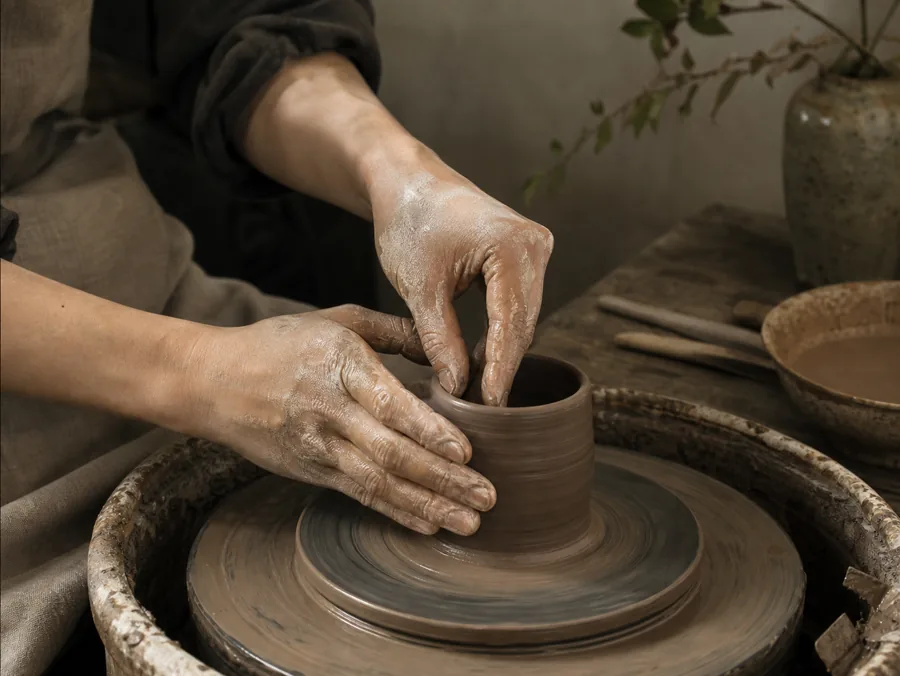
陶藝手拉坯體驗
初學者從一團陶土開始，練習定中心與拉高，完成自己的第一只杯或小碗。
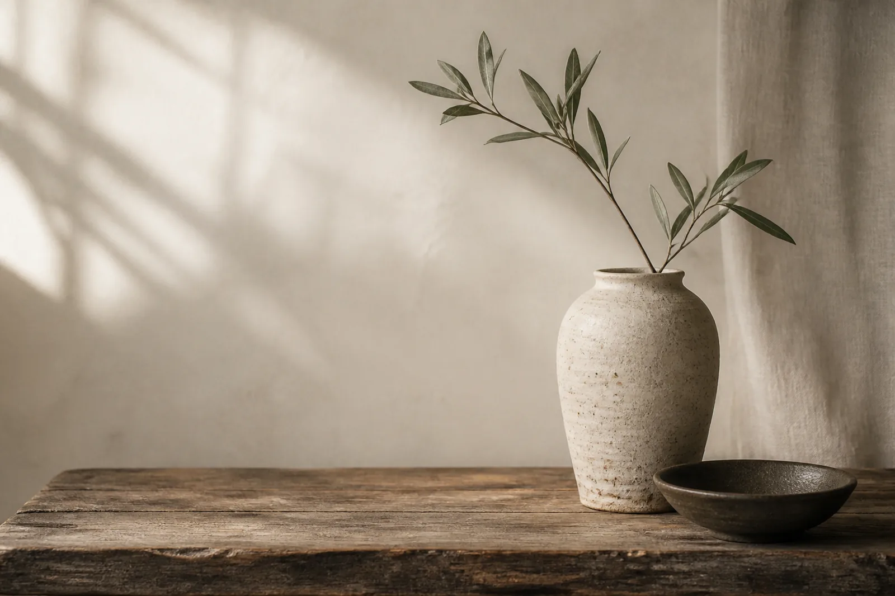
泥土會記得每一次按壓，也留下獨一無二的手感。
ABOUT LIUBAI
我們相信，手作的價值不在追求毫無瑕疵，而是在專注的過程裡，重新感受自己的節奏。
留白陶所是一間為初學者準備的小班制手作空間。從認識陶土、練習施力，到把作品帶回日常，每一步都有清楚示範與個別協助。
希望你離開時，不只帶走一件器物，也帶走一段安靜而踏實的時間。
了解一件作品如何完成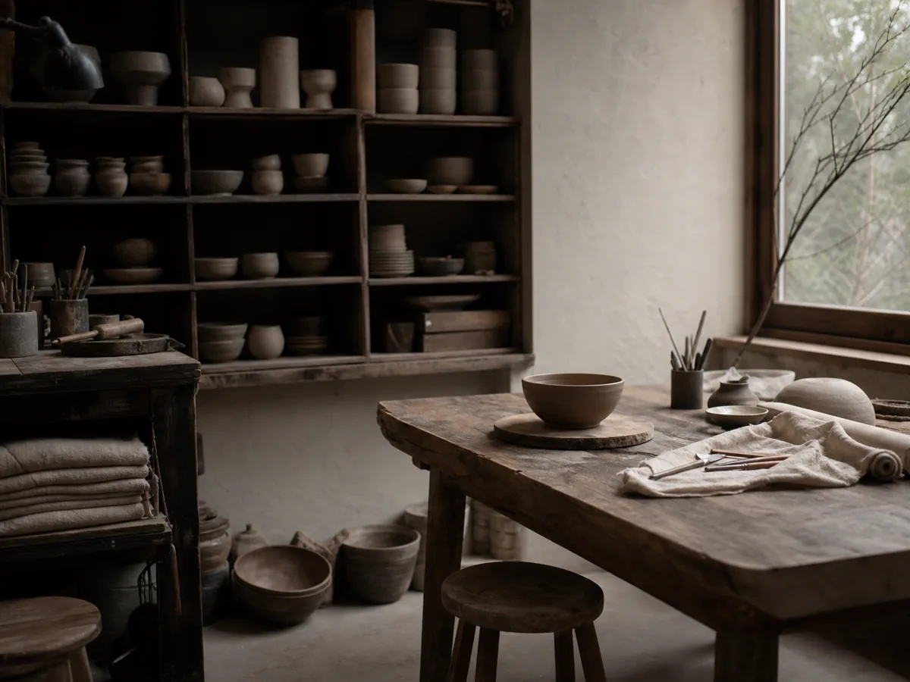
COURSES
從單次體驗到生活美學練習，四種節奏，讓第一次接觸手作也不慌張。

從一團陶土開始，練習定中心與拉高，完成自己的第一只杯或小碗。
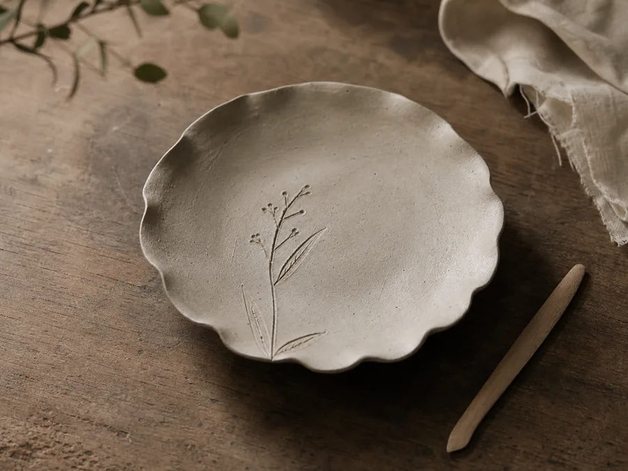
用掌心與指尖慢慢成形，把喜歡的植物紋理留在一只日常陶盤上。
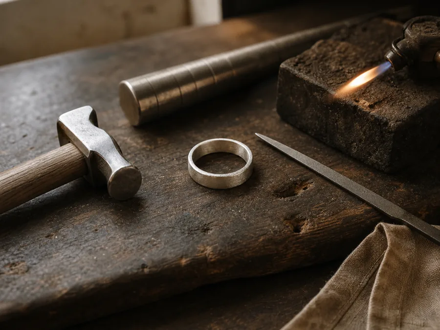
從敲打、塑形到細修，完成一件帶著個人手感的純銀日常飾品。
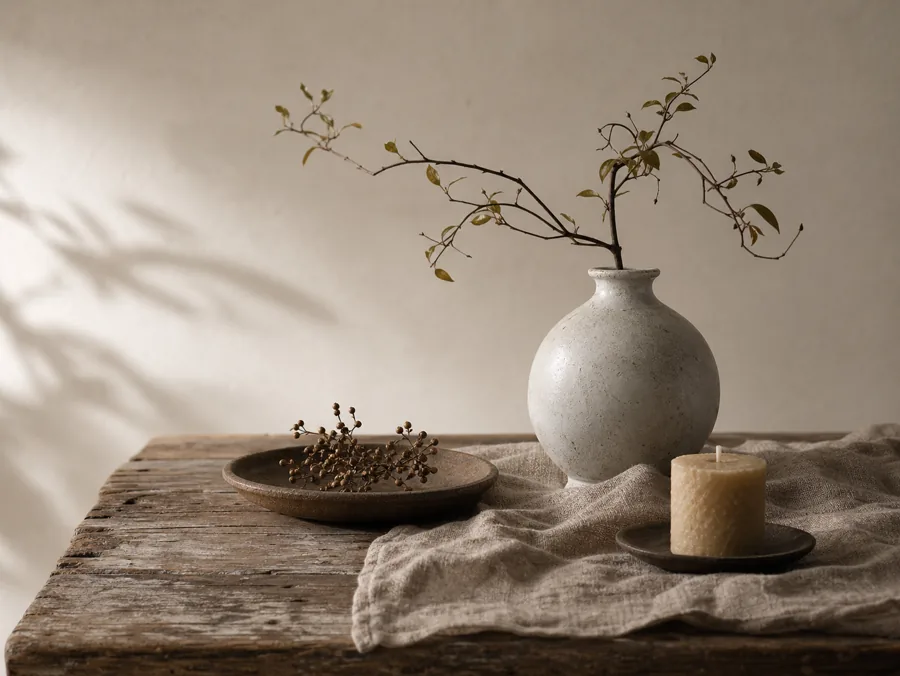
以器物、枝葉與天然素材練習陳設，為日常留下一處安定的風景。
OBJECTS
器物不必完全相同。每一道釉色、每一處微小起伏，都是手與火留下的證明。
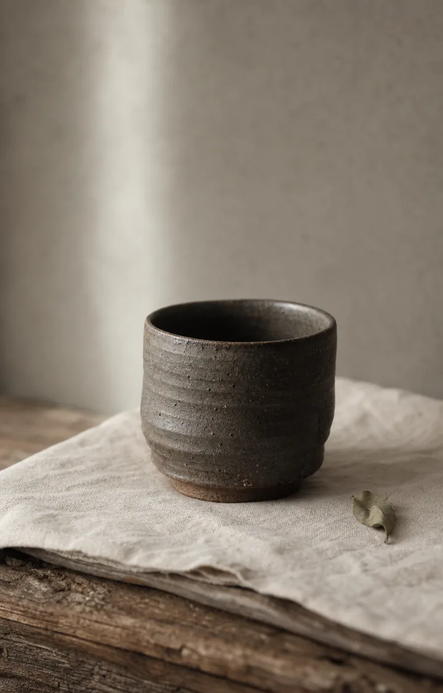
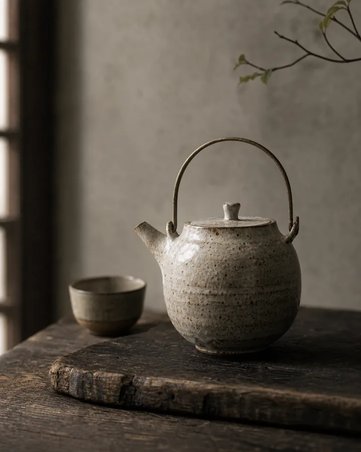
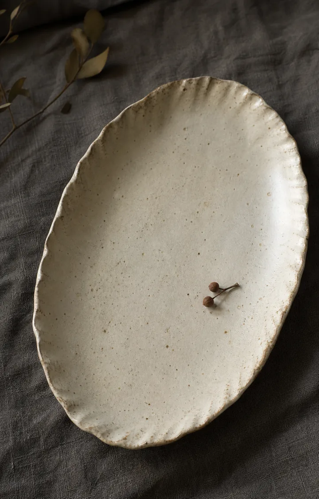
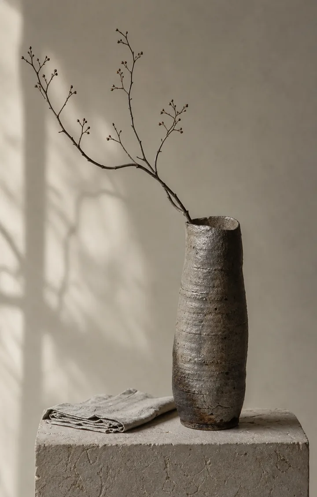
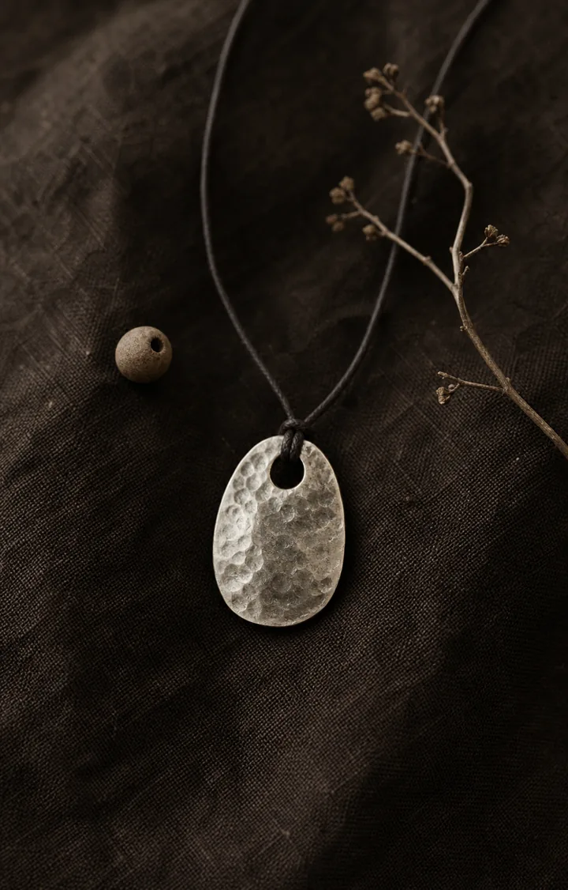
FROM CLAY TO TABLE
從預約到取件，每一步都有人陪你完成。
選擇課程與日期，確認人數及注意事項。
依作品方向認識土質、顏色與完成效果。
跟著示範練習施力，逐步完成器物輪廓。
選擇釉色後，由工作室乾燥、上釉與燒製。
作品完成後通知取件，讓器物回到日常。
陶藝作品需經乾燥、素燒、上釉與釉燒，通常於課後約 4–6 週完成；實際時間會依作品厚度與窯程調整。
STUDIO MOMENTS
以下內容為網站版型情境文案，不代表真實學員見證。
「原本很擔心手不巧，老師把每個步驟拆得很清楚。最後的杯子雖然不完全對稱，反而很像我自己。」
「三個小時沒有一直看手機，專心把盤子邊緣慢慢修好。是一堂安靜但很有成就感的課。」
「兩個人做出來的戒指個性完全不同。細節有人協助，保留的手敲痕又很自然，送禮很有意義。」
RESERVATION
填寫表單後會顯示示範完成提示，資料不會傳送或儲存。正式網站可再串接 Google 表單、LINE 或預約系統。
品牌、地址、電話、社群及預約功能皆為情境展示，並非真實營業資訊。
FAQ
可以。體驗課會從材料、工具與基本動作開始示範，並依每位學員的進度個別協助。
建議 10 歲以上由家長陪同參加；年齡較小或團體親子課，可先提供人數與年齡再確認合適內容。
陶藝作品需要充分乾燥並完成兩次燒製，因此無法當天帶走。燒製完成後會另行通知取件。
可以，兩人可選擇各自完成一件作品。若想共同製作同一件作品，建議先說明想法以確認器型與安排。
可於課程開始前依工作室規則提出調整；實際可更改次數與期限，會在正式預約時清楚說明。
通常約 4–6 週。作品厚度、乾燥狀況與排窯時間都會影響完成日，工作室會在出窯後通知。